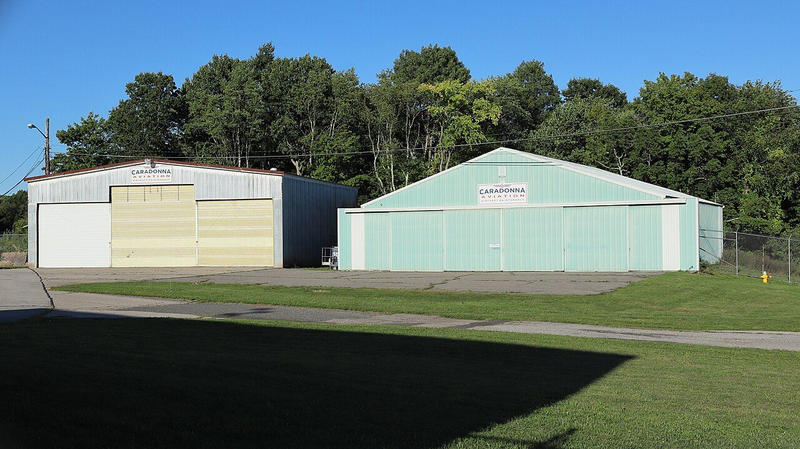
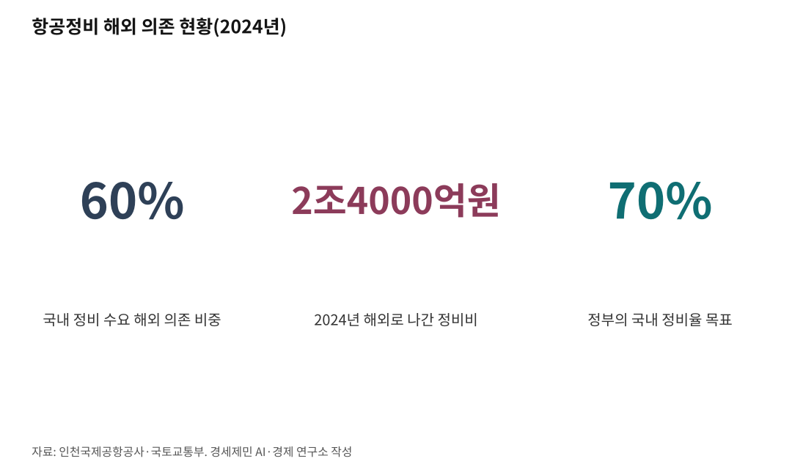

인천공항 25년 만의 첫 항공기 개조, 허브 요건 하나 열렸다
정비 능력도 허브공항 요건이다, 항공사는 정비 기지를 보고 거점을 고른다
국내 정비율 70% 목표는 거꾸로 갔고, 도장 격납고는 아직 김해 한 곳뿐이다
AI경세제민=김갑봉 기자 | 인하대 해양AI융합센터 김갑봉 연구교수

버전 V1.1(2026.8.11.) 직전 V1.0(2026.8.11., 초고 V3.0에서 승계)
개정 김갑봉 박사 데스킹 반영. 수량 어순 두 곳, 단위 표기 통일, 불필요한 ~의 넷,
외국 기업명 원어 병기 두 곳을 고쳤다. 사실관계와 수치는 손대지 않았다.
비고 초고 단계에서 김갑봉 박사 기존 원고 일곱 편을 계량해 문장·문단 지표에 맞춰 썼고,
대한항공 뉴스룸과 인천국제공항공사 홈페이지 1차 자료로 수치를 확정했다.
[사진① 화물기로 개조 중인 보잉 777-300ER 기체. 인천국제공항공사 제공]
인천국제공항(ICN)에서 여객기 한 대가 화물기로 바뀌고 있다. 2001년 개항한 지 25년 만에 처음이다. 좌석과 선반을 뜯어내고, 바닥 구조를 보강하고, 창문을 막았다. 10월 출고가 목표다.
반가운 소식이다. 다만 성과로만 읽으면 절반만 본 것이다. 이 개조시설은 인천공항이 허브공항이 되려고 갖춰야 할 요건 하나가 이제야 열렸다는 신호이기도 하다.
개항 25년 만의 첫 개조
개조 현장은 인천공항 제4활주로 북서측 첨단복합항공단지 1단계 용지에 있다. 시설을 운영하는 곳은 아이케이씨에스(IKCS)다. 이스라엘 국영기업 아이에이아이(IAI)와 국내 항공정비 기업 샤프테크닉스케이가 세운 합작법인이다.
격납고는 2.5베이(bay, 대형기 2.5대를 수용하는 격납고 단위) 규모다. 용지 조성과 격납고 건설은 인천국제공항공사가 맡았다.
개조 대상기는 보잉 777-300ER 여객기다. 2012년 만들어 기령이 14년이다(2026년 기준). 2026년 5월 입고했고 8월 6일 기준 공정률이 40%를 넘었다. 개조 기간은 약 180일이다.
작업은 넷으로 나뉜다. 좌석과 선반을 떼고, 대형 화물창과 화물 적재 시스템을 달고, 바닥 구조를 보강하고, 창문을 막는다. 마치면 한 번에 화물 100톤 넘게 싣는다.
가장 어려운 절차는 대형화물창 설치다. 하중을 지탱하는 동체 구조물을 정밀하게 잘라내야 한다. 잘라낸 자리 둘레에 큰 보강재를 대 자르기 전과 같은 안전성을 되찾아야 한다.
기체 주인은 세계 최대 항공기 운용리스사 에어캡(AerCap)이다. 개조를 마치면 홍콩 화물항공사 플라이메타(Fly Meta)가 빌려 쓴다.
부품은 국내에서 댄다. 개조 부품 절반 이상을 국내 조달로 채운다. 경남 사천 항공부품업체 아스트가 대형 화물창과 보강 구조물을 만들며 부품제작자증명(PMA)을 땄다. 사천 협력업체 40여곳이 부품 4000여개를 맡는다. 인천 업체 혜성솔레노는 약 18억원 규모 정비 플랫폼을 국산화했다.
시설은 연간 6대를 개조한다. 2030년까지 2호기 격납고를 지으면 에어버스 A330 같은 중대형까지 동시 8대를 다룬다. 처리량은 연 6~10대로 는다.
다만 세계 첫 개조는 아니다. 777-300ER 개조 1호기는 이스라엘에서 만들어 2025년 11월 21일 인도됐다. 인천 초도기는 국내 첫 개조다.

정비 능력도 허브공항 요건이다
[사진② 인천공항 첨단복합항공단지 전경. 인천국제공항공사 제공]
허브공항 요건은 노선망과 환승만이 아니다. 연계 수송망과 배후단지, 그리고 정비 능력이 함께 요건이 된다.
공항이 파는 것은 활주로와 슬롯(이착륙 시간대), 터미널이다. 그것을 사는 첫 손님은 항공사다. 항공사가 어느 공항을 거점으로 삼을지 정할 때 정비 기지가 있는지를 따진다.
정비를 받으러 다른 나라로 기체를 보내야 하는 공항은 항공사를 오래 붙들기 어렵다. 정비는 세워둔 기체의 시간을 부가가치로 바꾸는 장치이기도 하다.
인천에 정비 시설이 없었던 것은 아니다. 인천국제공항공사 자료를 보면 대한항공과 아시아나항공, 샤프테크닉스케이가 국적사 정비 격납고 4개를 이미 돌리고 있다. 비어 있던 것은 개조와 대형 중정비, 그리고 도장이다.
국제공항협의회(ACI) 기준 국제여객 세계 3위 공항(2025년)이 제 땅에서 대형기 한 대를 개조하지 못했다. 그 사실이 공백의 크기를 보여준다.
이스라엘 국영기업이 인천에 온 까닭
IAI가 인천을 고른 이유는 다섯이다.
첫째, 물량이 한 곳으로 감당이 안 됐다. IAI는 보잉 777-300ER을 화물기로 바꾸는 기술을 세계에서 유일하게 갖고 있다. 광동체 화물기 수요가 늘자 개조 거점을 늘렸다. 인천은 텔아비브와 아부다비에 이은 네 곳 가운데 하나다.
둘째, 격납고를 인천국제공항공사가 지어줬다. 공사가 용지와 격납고를 맡고, IAI와 샤프테크닉스케이는 합작법인으로 기술이전과 장비 구축을 맡았다. IAI로서는 초기 설비 부담이 크게 줄었다.
셋째, 부품을 현지에서 댄다. 넷째, 첨단복합항공단지를 자유무역지역으로 지정해 부품 수입 통관 시간을 약 70% 줄였다고 공사는 밝혔다. 다섯째, 시장이 가깝다. 개조를 마친 기체는 디에이치엘(DHL)과 페덱스(FedEx) 같은 화물항공사로 전량 수출된다.
IAI가 스스로 밝힌 이유는 둘이다. 광동체 화물기 수요가 늘어 세계 각지에 개조시설을 더 세워야 한다는 것이다. 그리고 한국 항공산업과 오래 협력해 왔고, 개조라인을 세울 한국의 역량과 숙련 인력을 믿는다는 것이다.
경과는 이렇다. 2021년 5월 합의각서, 2023년 4월 실시협약, 2025년 11월 14일 격납고 준공, 2026년 5월 초도기 입고다. 인천공항공사는 2025년부터 2079년까지 누적 수출액을 약 120억달러(약 15조원)로 내다봤다.
개조와 엔진, 어디가 꼭대기인가
인천국제공항공사 분류를 보면 기술 집약도는 운항정비가 낮고 기체정비가 중간이다. 부품정비가 중상이고, 가장 높은 자리에는 엔진정비와 개조사업이 나란히 있다. 개조가 엔진보다 위라고 단정할 근거는 없다.
개조를 하려면 부가형식증명(STC, Supplemental Type Certificate)이 있어야 한다. 형식증명을 받은 기체 설계를 바꾸고도 감항성이 유지된다는 것을 항공당국이 인정하는 증명이다. 동체를 잘라 화물문을 내는 일은 기체 하중 경로를 다시 설계하는 일이라 여기에 해당한다.
보잉 777-300ER의 이 증명은 IAI가 세계에서 유일하게 갖고 있다. 2025년 8월 31일 미국 연방항공청과 이스라엘 민간항공청 인증을 받았다.
냉정하게 보면 인천에서 하는 일은 IAI의 증명을 받아 시공하는 것이다. 설계와 인증의 주체는 IAI다. 우리는 아직 그 주체가 아니다.
다만 사다리의 첫 칸은 놓였다. 아스트가 부품제작자증명을 땄고, 부품 절반 이상을 국내에서 댄다. 2023년 실시협약에는 기술이전 조항이 들어 있다.
비용 구조도 눈여겨볼 대목이다. 공사 자료를 보면 운항정비는 인건비가 85%인데, 엔진정비는 자재비가 80%이고 인건비가 20%다. 개조사업은 자재비가 60%다.
국내 정비가 해외로 나가는 이유로 흔히 높은 인건비를 든다. 그런데 정작 고부가 영역인 엔진과 개조는 자재비가 지배한다. 인건비 논리만으로는 설명되지 않는다.
오버홀은 대한항공이 유일하다
개조시설은 오버홀을 하지 않는다. 오버홀은 분해조립을 뜻하는 중정비다. 항공기 성능을 생산 당시 수준으로 되돌리는 작업이고, 제작사에서 까다로운 기술 인가를 받아야 한다.
국내 항공사 가운데 항공기 엔진 오버홀을 할 수 있는 곳은 대한항공이 유일하다. 대한항공이 밝힌 사실이다. 1976년 보잉 707 엔진 중정비를 시작해 지금까지 5000대에 가까운 엔진을 되살렸다. 2004년부터는 다른 항공사 엔진도 수주했다. 델타항공과 중국 남방항공이 그 고객이다.
정비 가능한 엔진은 6종이다. 프랫앤휘트니 PW4000 계열과 GTF, CFM인터내셔널 CFM56, 제너럴일렉트릭 GE90-115B 등이다. 제너럴일렉트릭 GEnx 계열과 CFM인터내셔널 LEAP-1B를 더해 9종으로 늘릴 계획이다.
인증도 두텁다. 우리나라와 미국 연방항공청, 유럽 항공안전청, 중국 민용항공국 등 국내외 관계 당국 13곳에서 감항 인증을 받았다.
시설은 커진다. 영종도 운북지구 신엔진정비공장은 연면적 14만211㎡에 총 5780억원을 들여 2024년 3월 14일 첫 삽을 떴다. 2027년 문을 열면 아시아에서 가장 큰 항공 정비 단지가 된다. 정비 가능한 엔진은 연 100대에서 360대로 는다.
대한항공은 영종항공 일반산업단지 5만692㎡에 1500억원을 더 넣어 엔진 부품수리 공장도 짓는다. 2029년 착공, 2031년 준공이다. 인천경제자유구역청은 이 클러스터가 완성되면 연 5조원 매출과 2000명 넘는 고용을 내다봤다.
다만 세계 순위는 아직이다. 대한항공은 2030년까지 세계 10위권 엔진 정비기업 진입을 목표로 내걸었다. 뒤집어 말하면 지금은 10위권 밖이다.
국내 정비율 70% 목표가 거꾸로 갔다
국토교통부는 2021년 8월 12일 항공정비(MRO, Maintenance Repair and Overhaul) 산업 경쟁력 강화 방안을 확정했다. 국내 정비율을 2025년까지 70% 이상으로 올리겠다고 했다. 국내 처리 규모는 2030년 5조원, 일자리는 2030년 2만3000명이 목표였다. 당시 해외 위탁정비율은 56%였다(2020년 기준).
결과는 반대였다. 인천공항공사 자료를 보면 2024년 국내 정비 수요는 3조9000억원이다. 그 가운데 60%가 넘는 2조4000억원이 해외로 나갔다. 해외 의존 비중은 2019년 45.5%에서 2024년 60%로 5년 새 14.5%포인트 늘었다. 목표는 70%를 향했는데 현실은 40%로 내려앉았다.
이 통계는 군수를 뺀 민수 부문 기준이다. 공사 자료를 보면 민수 부문 국내 시장은 2018년부터 2022년까지 연평균 2조2000억원이다. 그 가운데 해외 외주가 연평균 52%인 1조1000억원이다.
우리 몫이 얼마나 작은지는 계산해 보면 드러난다. 민수 부문 연평균 2조2000억원은 공사가 제시한 2024년 세계시장 135조원의 1.6% 수준이다.
체급도 문제다. 국내 유일 항공정비 전문기업 한국항공서비스(KAEMS)는 2025년 매출 776억원으로 창사 이래 처음 흑자를 냈다. 반가운 일이다. 다만 그 매출은 2024년 해외 유출액 2조4000억원의 3% 수준이다.
시장 수치가 자료마다 다르다
목표가 흔들린 자리에는 근거 수치도 흔들린다.
박상우 국토교통부 장관은 2024년 4월 18일 첨단복합항공단지 기공식 기념사에서 이렇게 말했다. 세계 MRO 시장이 현재 125조원이고 10년 후 33% 늘어 166조원에 이르며, 아시아태평양이 약 60조원으로 세계 최대 시장이 된다는 것이다.
인천국제공항공사 홈페이지는 다르다. 세계시장이 2024년 1039억달러(약 135조원)이고 연평균 1.8% 성장해 2034년 1241억달러(약 161조원)에 이른다고 적었다. 아시아태평양은 2024년 338억달러(약 44조원)로 세계의 32.5%다.
같은 공사가 2026년 8월 6일 낸 보도자료는 또 다르다. 2025년 약 171조원에서 연평균 2.7% 성장해 2035년 224조원에 이른다고 했다. 이 수치는 컨설팅사 올리버와이먼이 2025년 2월 26일 낸 전망을 환산한 값이다.
세 계열은 규모도 성장률도 아시아태평양 비중도 다르다. 게다가 올리버와이먼은 2026년 2월 전망에서 2025년 실적을 1360억달러로 올려 잡고 성장률도 연평균 3.3%로 높였다. 정책 근거가 되는 수치가 자료마다 다르면 목표의 무게도 가벼워진다.
도장 격납고는 김해 한 곳뿐이다
[사진③ 격납고 내부 개조 작업 현장. 인천국제공항공사 제공]
첨단복합항공단지는 234만6000㎡ 규모다. 공사는 2021년 조성을 본격화했다. 1단계 62만3000㎡, 2단계 90만7000㎡, 3단계 81만6000㎡로 나눠 개발한다.
격납고 용지 일곱 곳 가운데 셋을 채웠다. IKCS 개조시설과 대한항공, 트리니티항공이다. 나머지 넷은 아직 비어 있다.
대한항공은 약 7만㎡에 1760억원을 넣어 2.5베이 격납고를 짓는다. 광동체 2대와 협동체 1대를 동시에 정비하며 통합기단 300여대 중정비를 맡는다. 2027년 착공해 2029년 4분기 운영을 시작한다.
트리니티항공은 1522억원을 넣어 격납고 2개를 짓는다. 국내 저비용항공사 가운데 처음이고 타사 항공기 정비까지 한다. 화물기 정비단지에는 미국 아틀라스에어가 들어와 동북아 중정비 사업을 편다.
빠진 고리는 도장이다. 개조와 중정비, 리스 종료 뒤에는 도장이 반드시 따른다. 그런데 국내 상업용 항공기 도장 격납고는 김해 대한항공 시설 한 곳뿐이다. 인천공항공사가 직접 밝힌 사실이다.
개조를 마친 기체가 페인트칠을 받으러 다시 해외로 나가는 까닭이 여기에 있다. 공사는 2026년 페인팅 격납고 개발전략 수립 용역을 시행해 민간사업자를 유치하겠다고 했다.
엔진과 부품 정비시설도 아직 없다. 공사는 부품지원용지에 부품샵과 엔진샵, 물류시설을 갖춘 정비 공급망을 만들 방침이다.
인력도 남은 문제다. 올리버와이먼이 2026년 2월 27일 낸 전망을 보면 미국 항공정비사 자격 보유자 41%가 60살을 넘었다. 앞으로 10년 안에 약 4만5000명이 은퇴한다. 정비 인력은 세계적으로 는다기보다 준다.
일정은 박혀 있다. 인천공항공사는 2026년 4월 27일 2단계 용지 조성 사전예비타당성 조사에 들어갔다. 2026년 9월 기획재정부에 예비타당성 조사를 신청한다. 2032년까지 국내외 전문 정비기업을 유치해 시설을 모으겠다는 계획이다.
국토교통부와 인천공항공사는 단지가 본격 운영되면 약 5000개 일자리가 생기고 향후 10년간 약 10조원 생산유발효과가 난다고 본다. 다만 두 기관 모두 추정 방법과 기준 연도를 공개하지 않았다.
싱가포르는 열 대 중 한 대를 정비한다
[사진④ 싱가포르 셀레타 항공우주단지 또는 창이공항 정비시설]
경쟁자는 앞서 갔다. 싱가포르 경제개발청 자료를 보면 싱가포르가 세계 정비 산출의 약 10%, 세계 엔진 정비 산출의 약 20%를 차지한다. 인력은 2만2000명이다. 세계 항공기 열 대 중 한 대, 엔진 다섯 대 중 한 대를 싱가포르가 정비한다.
출발도 빨랐다. 싱가포르는 2007년부터 북동부 셀레타공항을 활용해 셀레타 항공우주단지를 만들었다. 공항과 정비단지, 부품제조단지, 연구·교육단지를 한자리에 묶었다. 20년 가까이 앞선 출발이다.
그러면 인천은 무엇으로 겨루나. 셋이다. 첫째, 국제화물 물동량이 세계 3위다(ACI 기준, 2025년 국제화물). 화물기를 고치고 개조할 수요가 제 공항 안에 있다.
둘째, 국내 유일 엔진 오버홀 사업자인 대한항공이 같은 영종도에 엔진 정비 클러스터를 짓고 있다. 셋째, 개조 부품 절반 이상을 대는 사천 항공부품 집적지가 국내에 있다.
시장도 가깝다. 아시아태평양은 세계 MRO 시장의 3분의 1을 차지하는 최대 시장이다(인천국제공항공사 자료, 2024년 32.5%). 그 시장 한복판에 있으면서 정비 물량은 밖으로 내보내 온 것이 지난 25년이다.
다만 유리한 조건이 저절로 결과가 되지는 않는다. 인력만 봐도 싱가포르가 2만2000명이고, 첨단복합항공단지 고용 전망은 약 5000명이다. 네 배 넘는 차이다.
짚어둘 대목도 있다. 개조 물량이 리스사와 외국 화물항공사 수요에 기대는 구조다. 격납고를 공사가 지어 임대하는 방식이어서 공적 자금이 먼저 들어간다. 2단계 예비타당성 조사 결과도 아직 나오지 않았다.
그래도 방향은 분명하다. 25년 동안 비어 있던 요건 하나가 이제 열렸다. 요건이 되려면 도장과 엔진, 부품과 인력, 그리고 설계 역량까지 채워야 한다. 개조 1호기 한 대로 허브가 되지는 않는다.
※ 이 기사는 AI 프로그램 클로드를 활용해 작성했다.
참고문헌
· 국토교통부, "항공정비(MRO) 산업 경쟁력 강화 방안", 2021.8.12., https://www.molit.go.kr/USR/NEWS/m_71/dtl.jsp?lcmspage=1&id=95085919
· 국토교통부, "[기념사] 인천공항 첨단복합항공단지 기공식"(박상우 장관), 2024.4.18., https://www.molit.go.kr/USR/BORD0201/m_36412/DTL.jsp?id=I0303_B&mode=view&idx=258707
· 인천국제공항공사, "항공MRO산업" 공식 안내, https://www.airport.kr/co_ko/783/subview.do
· 인천국제공항공사, "화물기 개조 핵심공정 착수" 현장 브리핑, 2026.8.6.
· 인천국제공항공사, "대한항공 항공기 정비시설 투자유치 실시협약", 2025.11.24.
· 인천국제공항공사, "인천국제공항 개항 25주년" 보도자료, 2026.3.27.
· 대한항공, "대한항공, 운북지구에 항공기 엔진 정비 클러스터 구축… 新엔진 정비 공장 첫 삽", 2024.3.14., https://news.koreanair.com/대한항공-운북지구에-항공기-엔진-정비-클러스터-구/
· 인천경제자유구역청, "대한항공 영종항공 일반산업단지 입주 사업계획 원안 가결", 2026.5.20.
· Oliver Wyman, "Global Fleet and MRO Market Forecast 2025-2035", 2025.2.26., https://www.oliverwyman.com/our-expertise/insights/2025/feb/global-fleet-and-mro-market-forecast-2025-2035.html
· Oliver Wyman, "Global Fleet and MRO Market Forecast 2026-2036", 2026.2.27., https://www.oliverwyman.com/our-expertise/insights/2026/feb/global-fleet-and-mro-market-forecast-2026-2036.html
· Singapore Economic Development Board, "Singapore's aerospace sector gains altitude as Asia leads global aviation growth", https://www.edb.gov.sg/en/business-insights/insights/singapores-aerospace-sector-gains-altitude-as-asia-leads-global-aviation-growth.html
· AerCap Holdings N.V., "AerCap Cargo Delivers First Boeing 777-300ERSF to Fly Meta", 2025.12.1., https://www.aercap.com/news-media/press-releases/detail/617/aercap-cargo-delivers-first-boeing-777-300ersf-to-fly-meta
· 중부일보, "인천공항공사, 171조 규모 글로벌 항공정비 시장 진출 본격화", 2026.8.6., https://www.joongboo.com/news/articleView.html?idxno=363733247
· 한국경제, "해외 유출 수요 잡겠다…인천공항, MRO 허브로 도약", 2026.8.6., https://www.hankyung.com/article/202608068565g
· 경인일보, "인천공항 첨단복합항공단지 2단계 사업 잰걸음", 2026.4.27., https://www.kyeongin.com/article/1762599
· 포커스인천, "인천공항, 대한항공 중정비 시설 유치", 2025.11.24., https://www.focusincheon.com/news/articleView.html?idxno=6739
· 인천투데이, "인천공항 이스라엘 IAI 화물기 개조시설 준공 내달 가동", 2025.11.25., https://www.incheontoday.com/news/articleView.html?idxno=311507
· 인천투데이, "인천공항 보잉777 화물기 개조 첫 주문 10월 출고", 2026.8.6., https://www.incheontoday.com/news/articleView.html?idxno=322057
· 브릿지경제, "한국항공서비스, 2030년대 매출 5000억·아시아 MRO 톱5 도약 선언", 2026.1.28., https://www.viva100.com/article/20260128500569
· 에너지경제신문, "티웨이항공, 인천공항에 격납고 짓는다…1522억원 투자", 2024.12.26., https://m.ekn.kr/view.php?key=20241226025239145
사진 출처
· [대표사진] Peter Cooper Jr., "Caradonna Aviation Aircraft Maintenance hangars, Southbridge Airport 2026-08-29.jpg", 위키미디어 공용, CC0, https://commons.wikimedia.org/wiki/File:Caradonna_Aviation_Aircraft_Maintenance_hangars,_Southbridge_Airport_2026-08-29.jpg
※ 이 기사는 인공지능을 활용해 작성했습니다.
관련기사
- [UAM] 상용화 목표는 2025년이었다, 지금은 2028년
- [주식공부] 코스피 12.13% 하락, 자사주 끊긴 자리에 선 개인
- 노후계획도시 선도지구, 분담금은 용적률 두 구간에서 갈린다
- [철도] KTX-1 46편성 수명 2033년, 발주 시한은 2027년
저작권자 © AI경세제민 무단전재 및 재배포, AI학습 및 활용 금지